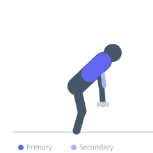

Exercise guide / Single-Arm Dumbbell Row with Isometric Hold
Single-Arm Dumbbell Row with Isometric Hold
The isometric-hold dumbbell row adds a 3-5 second contraction pause at the top of each repetition, sustaining peak lat and rhomboid tension through an extended hold. This technique increases time under tension without adding load, making it valuable for building the mind-muscle connection and hypertrophy in the upper back without excessive joint stress.
Primary muscles
latissimus dorsi
rhomboid major
Secondary muscles
biceps brachii
trapezius middle
Stabilizers
erector spinae
Equipment
Standard Barbell


Starting position
- One knee and hand on a bench, other foot on the floor. Dumbbell hanging in working hand, arm extended.
Setup
- Use a moderate weight — the isometric hold will make even lighter loads challenging. Focus on quality of contraction, not load.
Steps
- Step 1: Row the dumbbell to the hip or lower ribcage.
- Step 2: At the top position, hold for 3-5 seconds while actively squeezing the lat and rhomboid.
- Step 3: Maintain the hold — do not allow the elbow to drop.
- Step 4: Lower slowly (3 seconds) under full control.
- Step 5: Repeat for all reps on one side before switching.
Coaching cues
- Squeeze as hard as possible during the hold
- Think about pulling your elbow to the sky and keeping it there
- Own the negative — 3 full seconds
Breathing
- Exhale on the pull. Hold breath lightly during the isometric. Exhale during the lower.
Range of motion
- Full extension to full contraction, with isometric hold at peak.
Tempo
- 2-5-3-0 (2s pull, 5s hold, 3s lower)
Common mistakes
- Releasing tension during the hold — actively squeeze rather than passively hold
- Using too heavy a weight — the hold becomes impossible and form breaks
Safety
- Moderate loads only — the isometric reduces reliance on heavy weight
- Maintain neutral spine throughout
Training
- hypertrophy: 8–12 reps
- hypertrophy: 3–4 sets
- Rest: {'hypertrophy': 90}